Dalam proyek kali ini, Anda akan membandingkan preferensi musik pengguna di kota Springfield dan Shelbyville. Anda akan mempelajari data Y.Music yang sebenarnya untuk menguji hipotesis di bawah ini dan membandingkan perilaku pengguna di kedua kota ini.
Tujuan Menguji tiga hipotesis:
1. Aktivitas pengguna berbeda-beda tergantung pada hari dan kotanya,
2. Pada senin pagi, penduduk Springfield dan Shelbyville mendengarkan genre yang berbeda. Hal ini juga berlaku pada hari Jumat malam,
3. Pendengar di Springfield dan Shelbyville memiliki preferensi yang berbeda. Di Springfield, para pengguna lebih suka musik pop, sementara di Shelbyville musik rap memiliki lebih banyak penggemar.
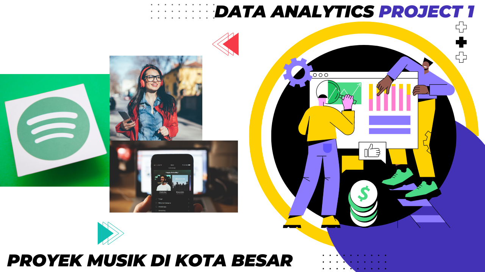
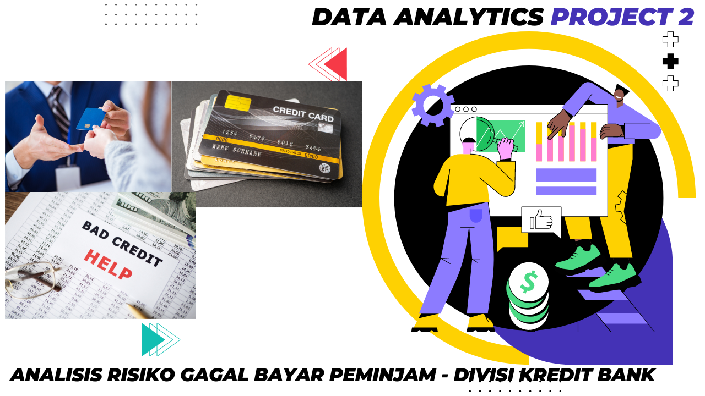
Tugas Anda adalah menyiapkan laporan untuk divisi kredit suatu bank. Anda akan mencari tahu pengaruh status perkawinan seorang nasabah dan jumlah anak yang dimilikinya terhadap probabilitas gagal bayar dalam pelunasan pinjaman. Pihak bank sudah memiliki beberapa data mengenai kelayakan kredit nasabah.
Laporan Anda akan dipertimbangkan pa da saat membuat penilaian kredit untuk calon nasabah. Penilaian kredit digunakan untuk mengevaluasi kemampuan calon peminjam untuk melunasi pinjaman mereka.

This holds all of my Tableau Dashboard - Trending By Time.
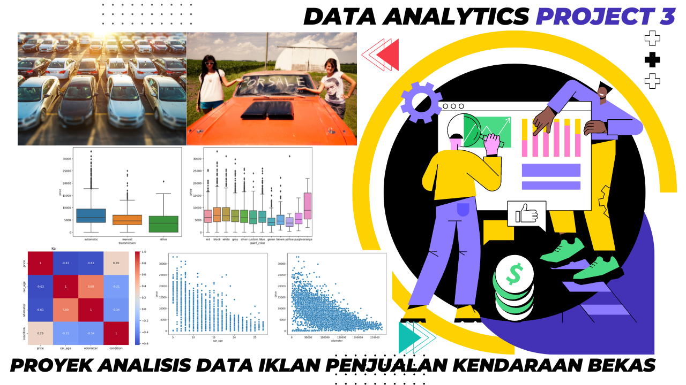
Ini adalah proyek analisis data iklan penjualan kendaraan bekas. Dalam proyek kali ini kita akan menganalisis data penjualan kendaraan bekas di situs web. dengan tujuan untuk mengetahui faktor-faktor apa saja yang mempengaruhi harga sebuah kendaraan dalam beberapa tahun terakhir.
Dalam proyek kali ini, kita akan menggunakan beberapa teknik analisis data dan visualisasi, termasuk penghitungan statistik deskriptif, pembuatan grafik, serta analisis korelasi dan regresi. Tujuan dari proyek ini adalah untuk memberikan wawasan yang berguna bagi pembeli dan penjual kendaraan bekas, serta bagi para pemerhati pasar otomotif.
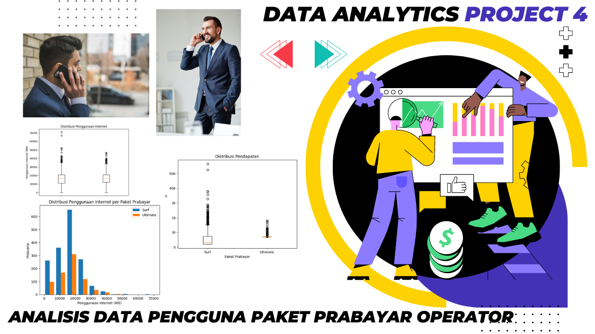
Ini adalah proyek analisis paket prabayar Megaline!. Pada proyek ini, kita akan melakukan analisis data pengguna paket prabayar dari Megaline, sebuah perusahaan telekomunikasi terkemuka. Tujuan utama proyek ini adalah untuk memahami pola penggunaan pengguna dan mengevaluasi keuntungan yang dihasilkan dari masing-masing paket prabayar.
Dalam proyek ini, kita akan melakukan analisis terhadap data pengguna paket prabayar yang mencakup informasi tentang panggilan, SMS, penggunaan data, biaya, dan pendapatan. Dengan menganalisis data ini, kita dapat memperoleh informasi tentang kebiasaan pengguna dan melihat apakah ada perbedaan yang signifikan dalam pendapatan antara pengguna paket Surf dan Ultimate.
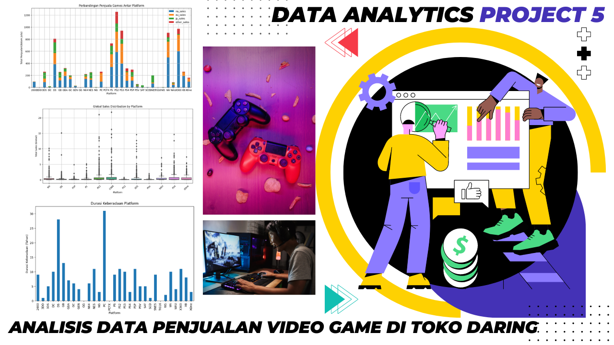
Toko daring "Ice" yang menjual video game dari seluruh dunia. Data terkait ulasan pengguna dan ahli game, genre, platform (misalnya Xbox atau PlayStation), dan data historis penjualan game tersedia dari sumber terbuka. Anda perlu mengidentifikasi pola-pola yang menentukan apakah suatu game dapat dikatakan berhasil atau tidak. Dengan begitu, Anda bisa menemukan game yang paling berpotensial dan merencanakan kampanye iklannya.
Dataset ini memuat singkatan. ESRB merupakan singkatan dari Entertainment Software Rating Board, yakni sebuah organisasi regulator mandiri yang mengevaluasi konten game dan memberikan rating usia seperti Remaja atau Dewasa.
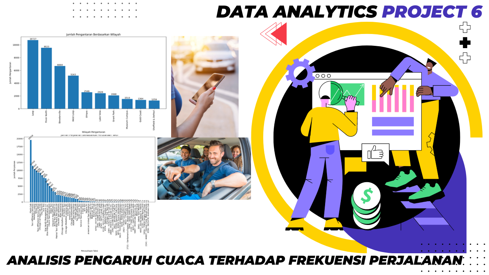
Sebagai seorang analis untuk Zuber, sebuah perusahaan berbagi tumpangan (ride-sharing) baru yang diluncurkan di Chicago. Tugas Anda adalah untuk menemukan pola pada informasi yang tersedia.
Anda ingin memahami preferensi penumpang dan dampak faktor eksternal terhadap perjalanan. Dengan menggunakan basis data, Anda akan menganalisis data dari kompetitor dan menguji hipotesis terkait pengaruh cuaca terhadap frekuensi perjalanan.
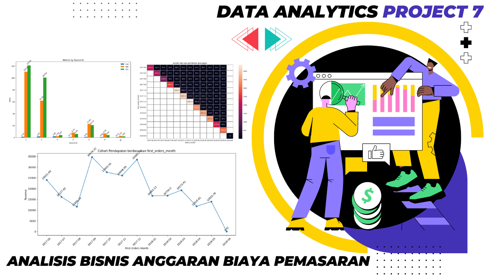
Anda pun ditawarkan kesempatan untuk tugas pertama yang mereka berikan kepada Anda adalah membantu mengoptimalkan anggaran biaya pemasaran.
Pada project kali ini kita akan mengetahui : Bagaimana para pengguna menggunakan produk Y.Afisha, Kapan mereka mulai melakukan pembelian, Berapa jumlah uang yang disumbangkan oleh setiap pengguna, Kapan semua biaya pemasaran terbayarkan.
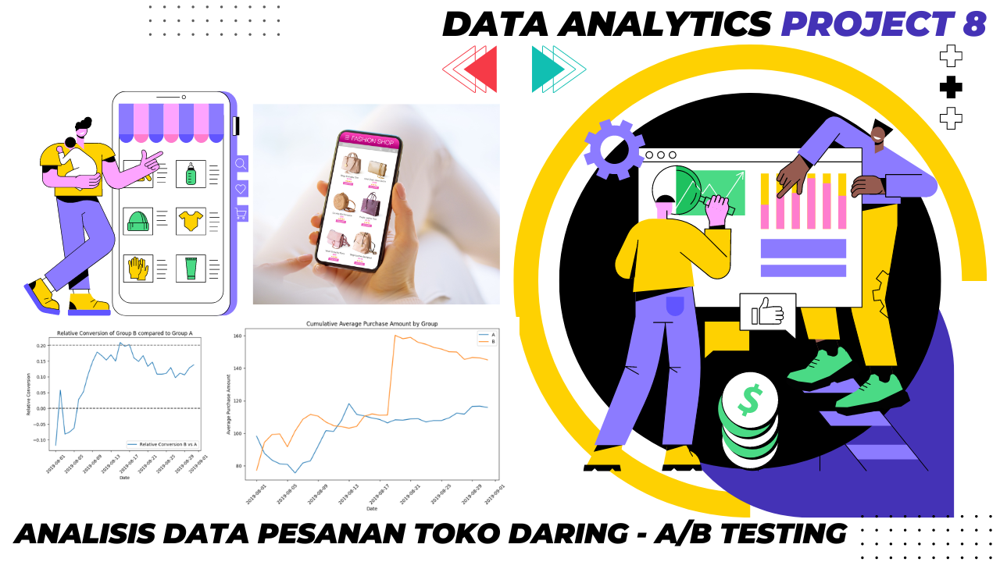
Anda adalah seorang analis di sebuah toko daring besar. Anda bersama tim pemasaran telah menyusun daftar hipotesis untuk membantu meningkatkan pendapatan. Anda perlu memprioritaskan hipotesis tersebut, menjalankan A/B testing, dan menganalisis hasilnya.
Tujuannya : 1. Menganalisis perilaku pengguna; 2. Membandingkan performa kelompok A dan B; 3. Mengidentifikasi faktor-faktor pengaruh; 4. Memberikan wawasan berharga untuk pengambilan keputusan bisnis;
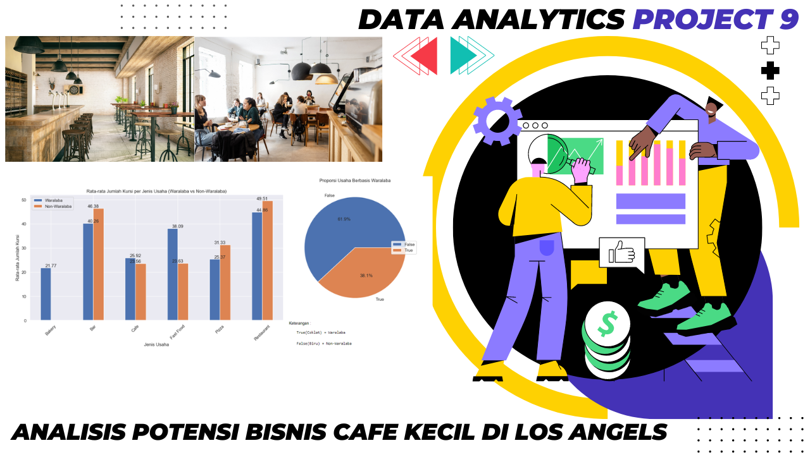
Anda telah memutuskan untuk membuka sebuah kafe kecil di Los Angeles. Kafe Anda bisa dibilang cukup unik, karena Anda "memperkerjakan" robot sebagai pelayan atau pramusaji. Proyek ini memang menjanjikan, namun membutuhkan modal yang besar. Oleh karena itu, Anda dan para mitra Anda memutuskan untuk menarik minat investor. Mereka tertarik dengan kondisi pasar saat ini—namun, mampukah Anda mempertahankan kesuksesan saat daya tarik sang robot mulai pudar?
Mengingat Anda adalah seorang pakar analisis, para mitra pun meminta Anda untuk mempersiapkan sejumlah riset pasar. Anda memiliki data dari sumber terbuka (open source) terkait jenis-jenis usaha tempat makan di LA.
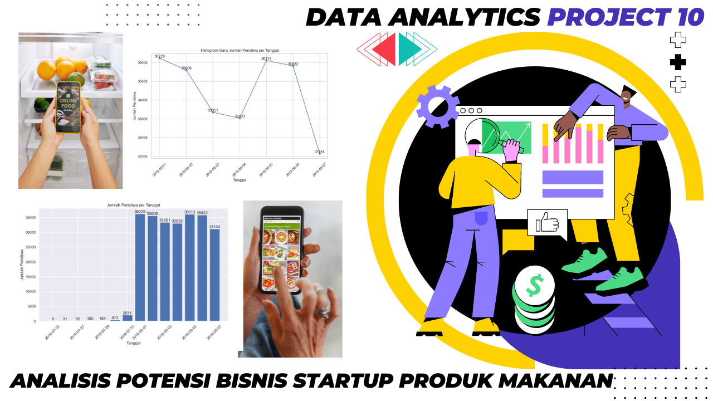
Anda bekerja di sebuah startup yang menjual produk makanan. Anda perlu mencari tahu perilaku pengguna aplikasi dari perusahaan tersebut. Pertama-tama, mencoba untuk mempelajari terlebih dahulu corong penjualannya. kemudian menemukan jalur yang harus dilalui pengguna untuk bisa mencapai tahap pembelian. Berapa banyak pengguna yang benar-benar berhasil mencapai tahap pembelian? Berapa banyak pengguna yang terhenti pada tahap-tahap sebelumnya? Pada tahap manakah persisnya hal tersebut terjadi?
Kemudian, lihatlah hasil dari A/A/B testing. Tim web designer ingin mengubah font untuk keseluruhan aplikasi, tetapi product manager merasa khawatir jika para pengguna justru akan merasa bahwa desain baru tersebut mengganggu. Mereka pun memutuskan untuk mengambil keputusan berdasarkan hasil A/A/B testing.
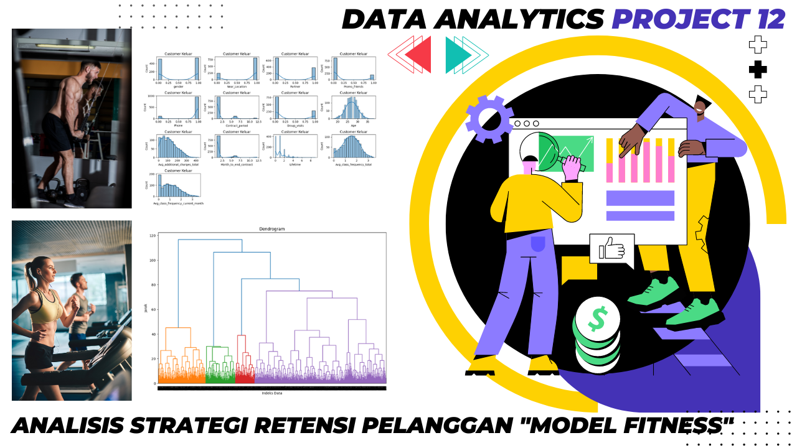
Salah satu masalah yang paling sering dijumpai oleh layanan pusat kebugaran dan bahkan layanan lainnya adalah perputaran pelanggan atau customer churn Bagaimana cara Anda mengetahui bahwa pelanggan sudah berhenti menggunakan layanan Anda? Anda memang bisa menghitung tingkat churn berdasarkan jumlah orang yang menghapus akun atau tidak memperbarui kontrak langganan mereka. Namun terkadang, Anda tidak bisa mengetahui dengan pasti apakah seorang klien benar-benar telah berhenti: mereka mungkin meninggalkan Anda tanpa sepengetahuan Anda.
Untuk mengurangi tingkat churn, Model Fitness telah melakukan digitalisasi terhadap sejumlah profil pelanggannya. Adapun tugas Anda adalah menganalisis profil para pelanggan tersebut dan mengembangkan strategi retensi pelanggan (customer retention).
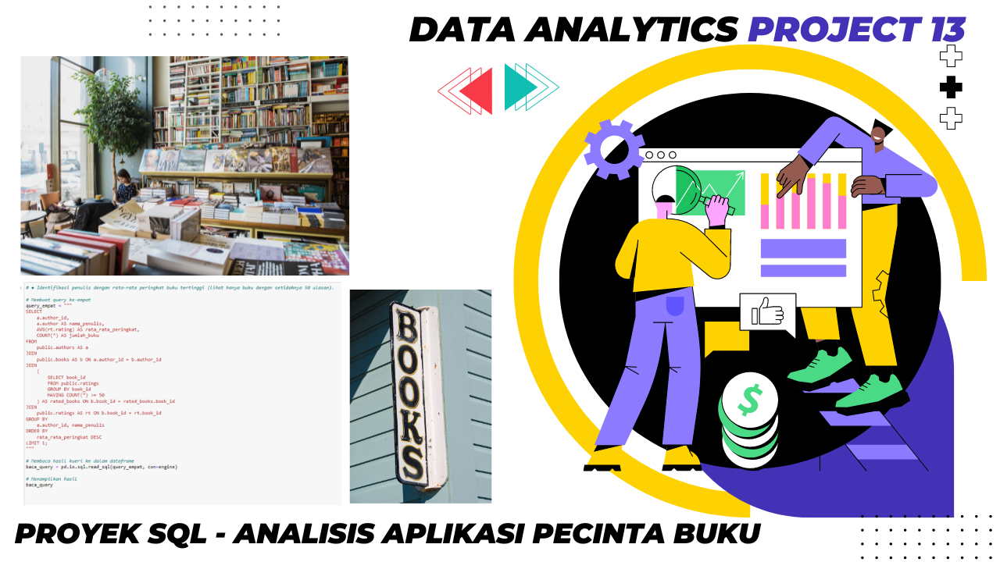
Virus corona yang kehadirannya mengejutkan seluruh dunia telah mengubah rutinitas harian semua orang. Kini, warga kota tidak lagi menghabiskan waktu luangnya di luar rumah seperti pergi ke kafe dan mal.
Mereka lebih sering berada di rumah, menghabiskan waktunya dengan membaca buku. Hal ini pun mendorong perusahaan startup untuk mengembangkan aplikasi baru bagi para pecinta buku.
Anda telah diberi sebuah database dari salah satu perusahaan yang bersaing dalam industri ini. Database tersebut berisi data tentang buku, penerbit, penulis, serta rating dan ulasan pelanggan atas buku terkait. Informasi ini akan digunakan dalam membuat penawaran harga untuk sebuah produk baru.
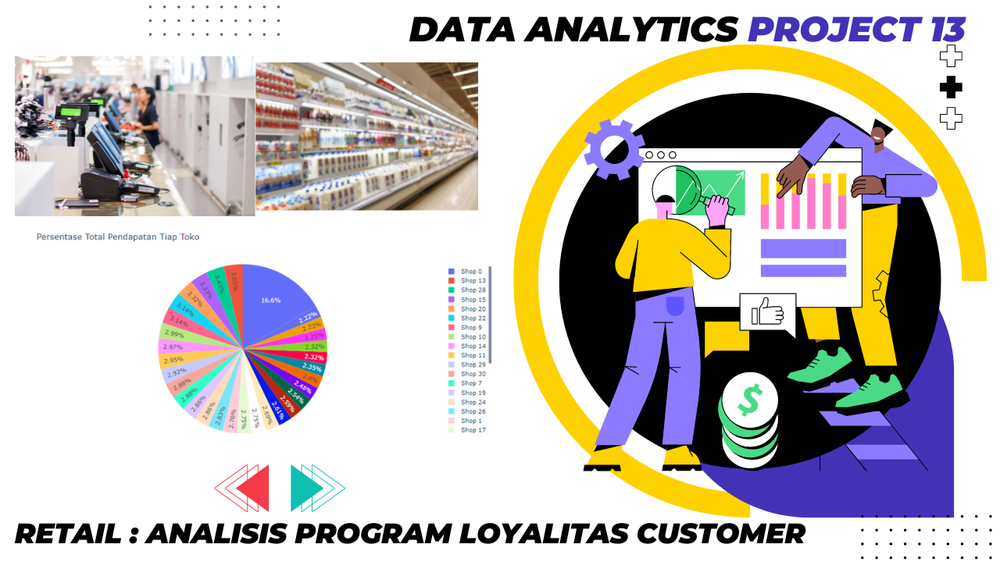
Program loyalitas pelanggan dalam bisnis ritel adalah strategi yang dirancang untuk memotivasi dan mempertahankan pelanggan setia. Program ini biasanya melibatkan pemberian poin, diskon, hadiah, atau manfaat lain kepada pelanggan yang secara konsisten berbelanja di toko tersebut. Tujuan utama dari program loyalitas ini adalah meningkatkan retensi pelanggan, meningkatkan nilai seumur hidup pelanggan, dan mendorong pembelian berulang.
Melalui program ini, toko dapat mengumpulkan data tentang perilaku pelanggan, seperti preferensi produk dan frekuensi pembelian, yang dapat digunakan untuk mengoptimalkan strategi pemasaran dan penawaran yang lebih sesuai
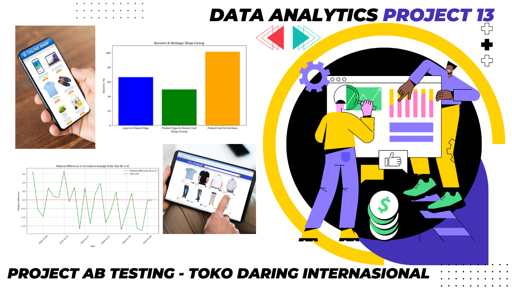
Anda telah menerima sebuah tugas analitik dari suatu toko daring internasional. Pendahulu Anda gagal untuk menyelesaikan tugas ini: dia sempat menjalankan A/B testing sebelum akhirnya berhenti dari pekerjaannya (katanya sih, demi beternak ayam di kampung). Dia pun hanya meninggalkan spesifikasi teknis dan hasil dari eksperimen yang dilakukannya.